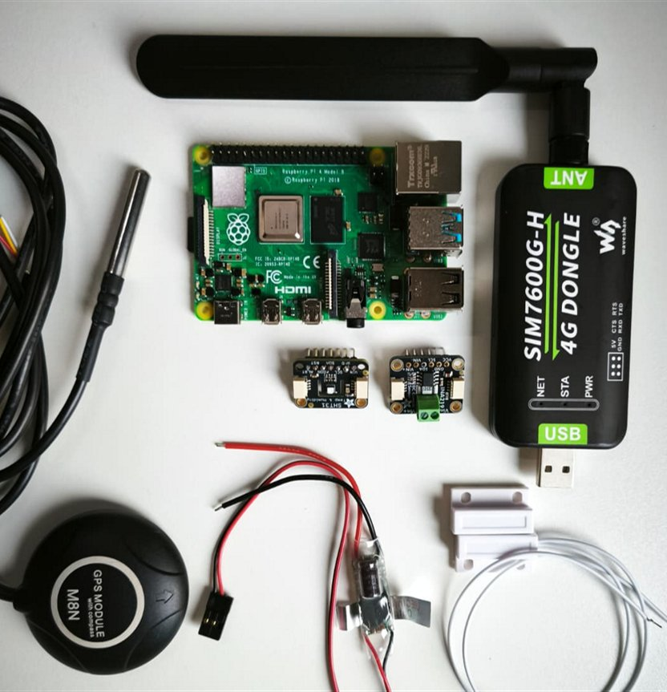
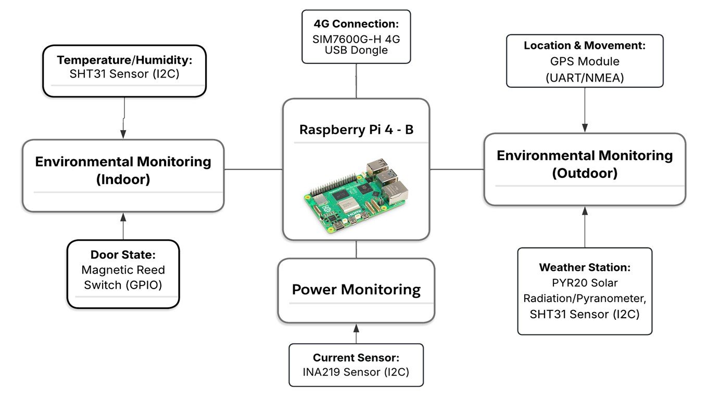
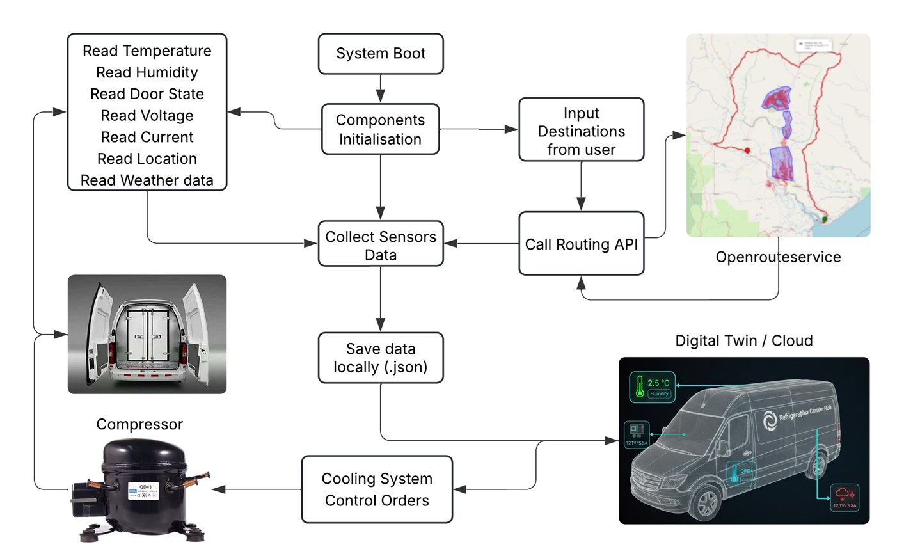

Cold-Chain Sensor Hub
An always-on edge computer for refrigerated delivery vans. A Raspberry Pi reads temperature, humidity, door state, position and weather, combines everything into one structured record every 5 seconds, and pushes it to the cloud over 4G every 30 seconds. It plans the route to each delivery, keeps logging through signal loss, and restarts itself after a crash or power cut, so nobody has to touch it once it is installed.


Many sensors, many buses, one Pi
Inside the cargo area, an SHT31 measures temperature and humidity, a DS18B20 probe adds a second temperature reading, and a magnetic reed switch reports whether the door is open. Outside, a second SHT31 and a PYR20 pyranometer measure the weather and the sunlight hitting the van, and an M8N GPS tracks its position.
These sensors use five different interfaces: I2C, 1-Wire, GPIO, UART and RS485 Modbus. A SIM7600G-H 4G dongle connects the van to the internet.

From boot to the cloud
On power-up, a systemd service starts the Python runtime, loads the configuration and initialises every sensor. From then on the main loop reads all the sensors every 5 seconds, merges the readings into one timestamped record and writes it to a daily JSON Lines file.
A separate uploader syncs the files to cloud storage with rclone every 30 seconds. The code is config-driven, so adding a new sensor or changing an interval means editing a JSON file, not the core code.
// one record, every 5 seconds { "timestamp": "2026-06-02T18:32:04Z", "van_id": "van_01", "inside": { "temperature_c": 22.31, "humidity_percent": 46.51 }, "door_open": false, "gps": { "latitude": 52.4862, "longitude": -1.8904, "fix": true }, "route": { "provider": "openrouteservice", "summary": { "total_distance_km": 0.19, "total_duration_min": 0.4 } }, "weather_station": { "temperature_c": 22.79 }, "solar_radiation": { "solar_radiation_w_m2": 9 } }
One record, everything in it
Every record holds the full picture of the van at that moment: cargo temperature and humidity, door state, position, outside weather and solar load, all under one timestamp, ready for analysis.
When a mission has delivery destinations, the hub calls the OpenRouteService API every 3 minutes from its live GPS position and adds the remaining distance and ETA for each leg to the record. Destinations can be postcodes or coordinates. I also helped design the SQL database that archives these records for the project's web platform.
Built to run unattended
The hub is offline-first: every record is saved on the device before any upload is attempted. If the van loses signal, logging carries on and the upload simply retries later, so no data is lost.
It runs headless as a systemd service that starts at boot, restarts after a crash and logs to the system journal. Bad or missing sensor readings are caught and recorded instead of stopping the loop. For maintenance, Tailscale gives secure remote SSH access over 4G, wherever the van is.
Towards energy-aware cooling
The design leaves room to grow. An INA219 power monitor is wired into the architecture for battery and solar telemetry, and the flow above ends in cooling-control commands. The aim is a digital twin of each van that can adjust the refrigeration compressor based on load, weather and route, saving energy without risking the cargo.
/stack